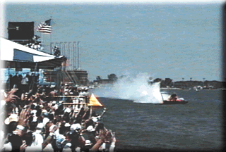
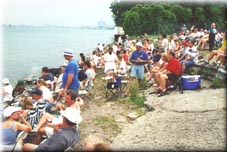

|
VIP Stockton Corporate is Plan #6. This is a tented suite viewing area which offers a great view of the racing and the Start/Finish Line. Individuals purchasing tickets have a Thunderfest tent to relax in. For groups of 25 or more, a private tent and catering is available. Call Spirit Of Detroit THUNDERFEST for more Hospitality Package info.
 (Photo copyright Gene Cassaroll & Brian Reed) This photo is taken from Stockton Park and shows Miss Budweiser (driver: Chip Hanauer) crossing the line to win the Gold Cup in 1995. The blue & white tent at the far end is part of the Judges Stand seating, and the yellow bouy marks the Start/Finish line. These are photos of Stockton park:
![[An overhead view of VIP Stockton]](stockt1.gif)
 (Photos copyright Joe Pfeiffer and Joe Dabliz)
All contents Copyright © 1997 Spirit of Detroit THUNDERFEST, except where noted.
Web page created by Brian Reed.
|